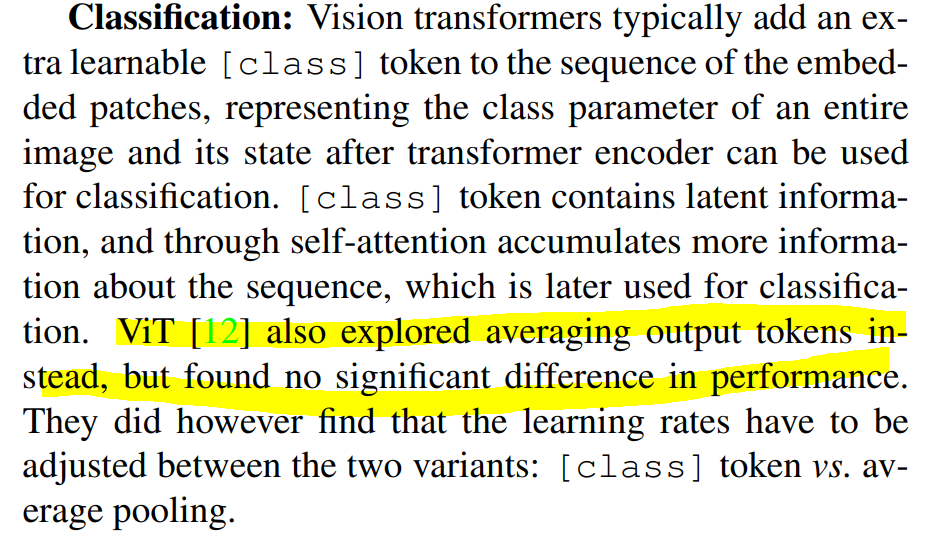
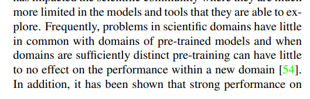

Q&A
Contents
Q&A#
class token과 Average pooling의 차이#
3장에 classification 파트에 보면 위와 같이 설명이 되어 있습니다. 그렇다면 저희가 지금까지 리뷰했던 ViT 기반의 모델들은 결국 class token을 쓰나 Average pooling을 하나 큰 차이가 없다고 봐도 될까요?

제 생각에는 태스크의 차이에 따라 cls token과 avg pooling 사용하는 것 같습니다. 저도 이전에 큰 차이를 못 느껴서 encoder decoder 구조의 네트워크를 사용했을때는 cls token을 사용하는 것이 맞지만 단순 classification 태스크의 경우 avg pooling을 적용하는 것이 좋다고 생각합니다.
의료 도메인에서의 용도와 기능#
의료 도메인에서 pretrained 모델을 사용하지 않나요??
개인적으로 궁금한 것인데 현업분들은 의료 도메인에서 어떤 용도? 기능?으로 딥러닝 기술을 적용하는지 궁금합니다!

1. 제가 알기로는 의료 분야 쪽은 환자에 대한 정보 보안 때문에 pre-trained 모델을 사용하지 않는다고 알고 있습니다.
2. 대표적으로 segmenation 태스크를 적용해서 ct 사진의 부위별 분류하는 것을 많이 봐왔는데 어떤 용도로 사용하는지는 저로써는 잘 모르겠네요;;;
논문에서는 데이터를 모으기 힘든 질병의 경우 pre-train data로 사용할 수 있을만큼 충분하지 못하다는 얘기를 하는군요!
(optional) positional embedding?#
CCT architecture에서 질문이 있습니다. (optional) positional embedding 이라는건 learnable / sinusoidal / none 중 하나를 택해서 한다는 뜻인가요?
convolution을 사용함으로써 두 가지의 PE(learnable, sinusoidal) 또는 none을 모두 적용할 수 있다는 의미입니다. 하지만 성능은 learnable이 가장 좋았다고 얘기합니다.
Edit by 김주영